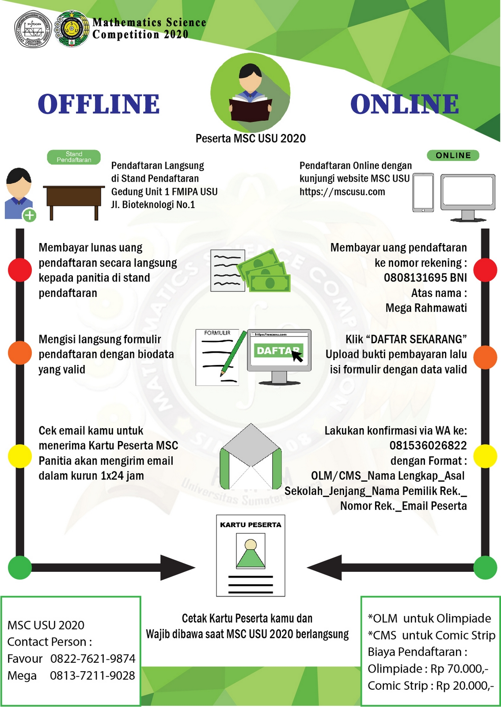

Browsermu tidak mendukung tag audio, upgrade donk!
Beranda
Daftar Sekarang
Tentang MSC
Sejarah MSC
Susunan Kepengurusan MSC 2022
TENTANG KAMI
DOWNLOAD BUKU PANDUAN PENDAFTARAN
TENTANG MATEMATIKA USU
DOKUMENTASI MSC SEBELUMNYA
Pengumuman
Kontak Informasi
Beranda
Daftar Sekarang
Tentang MSC
Sejarah MSC
Susunan Kepengurusan MSC 2022
TENTANG KAMI
DOWNLOAD BUKU PANDUAN PENDAFTARAN
TENTANG MATEMATIKA USU
DOKUMENTASI MSC SEBELUMNYA
Pengumuman
Kontak Informasi

Alur Pendaftaran Peserta
Buku Petunjuk Pelaksanaan
Tue Apr 19 2022
Silahkan Download buku petunjuk Pendaftaran dengan mengklik
disini
Pengumuman Hasil MSC 2020
Tue Apr 19 2022
Bagi Para peserta bisa mengunduh hasil pengumuman MSC 2020
Download Hasil Olimpiade SMA
Download Hasil Olimpiade SMP